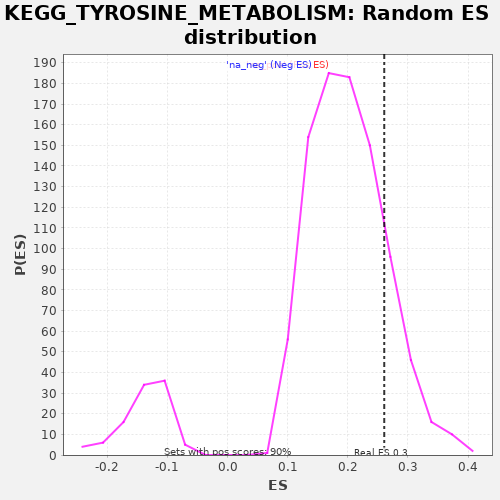

| | | Dataset | drug_embeddings_gsea |
| Phenotype | NoPhenotypeAvailable |
| Upregulated in class | na_pos |
| GeneSet | KEGG_TYROSINE_METABOLISM |
| Enrichment Score (ES) | 0.26054642 |
| Normalized Enrichment Score (NES) | 1.302745 |
| Nominal p-value | 0.15795328 |
| FDR q-value | 0.72909915 |
| FWER p-Value | 1.0 |
Table: GSEA Results Summary
 Fig 1: Enrichment plot: KEGG_TYROSINE_METABOLISM
Fig 1: Enrichment plot: KEGG_TYROSINE_METABOLISM
Profile of the Running ES Score & Positions of GeneSet Members on the Rank Ordered List
| PROBE | GENE SYMBOL | GENE_TITLE | RANK IN GENE LIST | RANK METRIC SCORE | RUNNING ES | CORE ENRICHMENT | | 1 | DBH | | | 1122 | 1.000 | -0.0354 | Yes |
| 2 | HPD | | | 1250 | 1.000 | -0.0030 | Yes |
| 3 | TYR | | | 1524 | 1.000 | 0.0194 | Yes |
| 4 | ADH1A | | | 2116 | 1.000 | 0.0202 | Yes |
| 5 | LCMT2 | | | 2213 | 1.000 | 0.0547 | Yes |
| 6 | TRMT11 | | | 2239 | 1.000 | 0.0941 | Yes |
| 7 | HEMK1 | | | 2371 | 1.000 | 0.1262 | Yes |
| 8 | ADH4 | | | 2683 | 1.000 | 0.1461 | Yes |
| 9 | AOC3 | | | 3147 | 1.000 | 0.1556 | Yes |
| 10 | TPO | | | 3309 | 1.000 | 0.1857 | Yes |
| 11 | ADH7 | | | 3652 | 1.000 | 0.2034 | Yes |
| 12 | TAT | | | 4069 | 0.940 | 0.2136 | Yes |
| 13 | LCMT1 | | | 4303 | 0.926 | 0.2358 | Yes |
| 14 | METTL2B | | | 4538 | 0.914 | 0.2574 | Yes |
| 15 | MAOB | | | 5329 | 0.874 | 0.2394 | Yes |
| 16 | AOX1 | | | 6639 | 0.809 | 0.1834 | Yes |
| 17 | TH | | | 6871 | 0.796 | 0.2003 | Yes |
| 18 | GSTZ1 | | | 6927 | 0.793 | 0.2291 | Yes |
| 19 | HGD | | | 6944 | 0.792 | 0.2605 | Yes |
| 20 | MAOA | | | 8005 | 0.734 | 0.2184 | No |
| 21 | DDC | | | 9472 | 0.647 | 0.1450 | No |
| 22 | ALDH3B2 | | | 10531 | 0.588 | 0.0970 | No |
| 23 | ADH5 | | | 10862 | 0.582 | 0.0985 | No |
| 24 | GOT2 | | | 11631 | 0.568 | 0.0694 | No |
| 25 | ALDH3A1 | | | 12282 | 0.553 | 0.0478 | No |
| 26 | COMT | | | 12826 | 0.537 | 0.0329 | No |
| 27 | MIF | | | 12907 | 0.534 | 0.0494 | No |
| 28 | TYRP1 | | | 12910 | 0.534 | 0.0712 | No |
| 29 | GOT1 | | | 14235 | 0.435 | -0.0012 | No |
| 30 | METTL6 | | | 14342 | 0.415 | 0.0086 | No |
| 31 | FAH | | | 14459 | 0.381 | 0.0163 | No |
Table: GSEA details [plain text format]

Fig 2: KEGG_TYROSINE_METABOLISM: Random ES distribution
Gene set null distribution of ES for KEGG_TYROSINE_METABOLISM